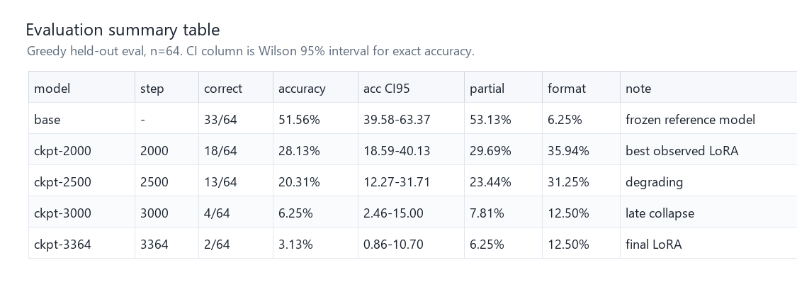
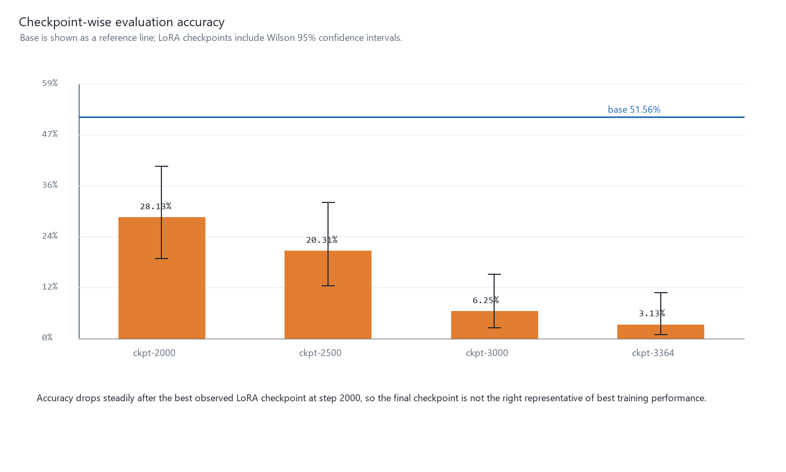
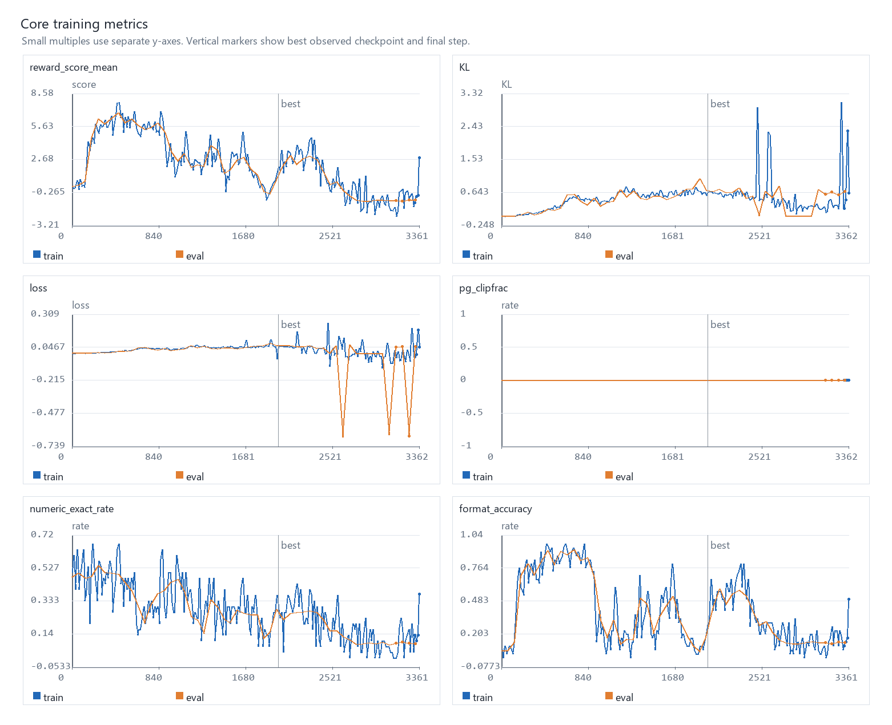
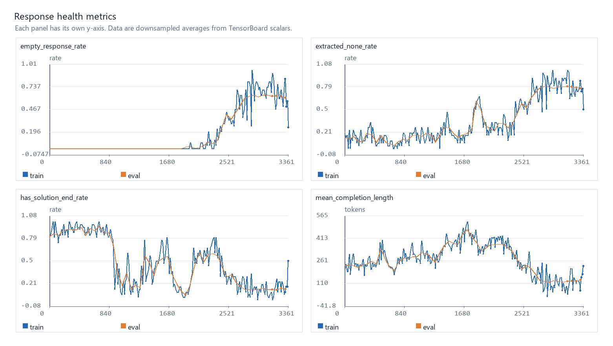
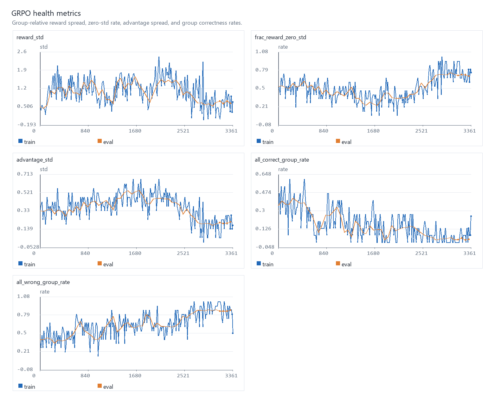
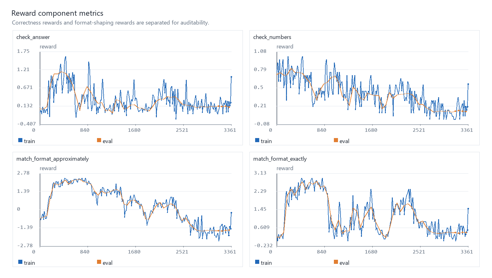
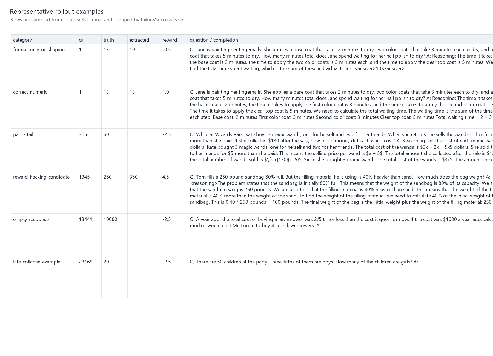
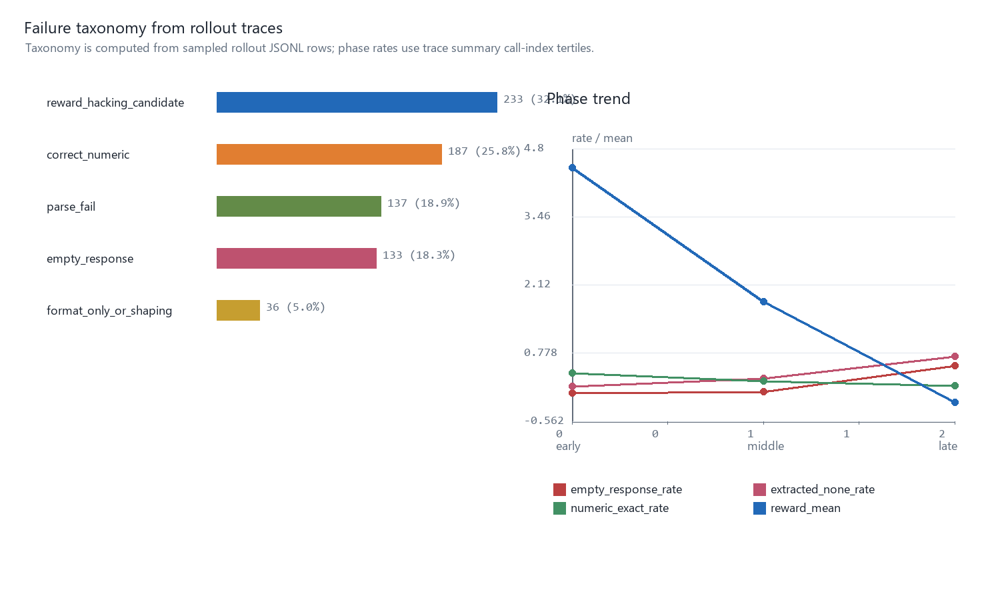
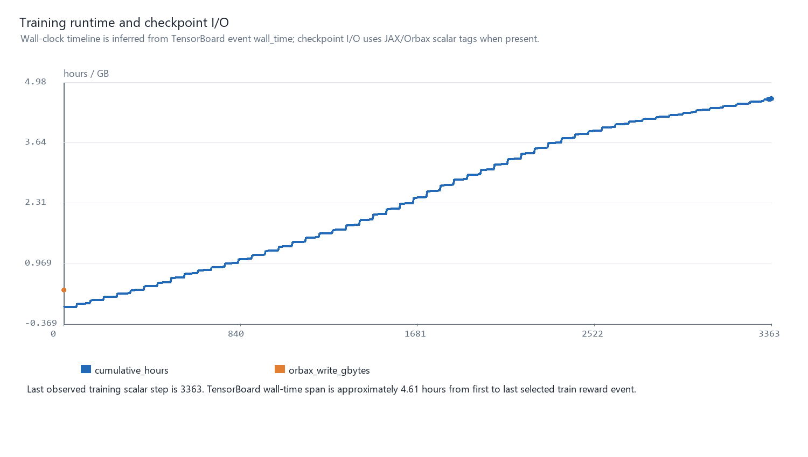
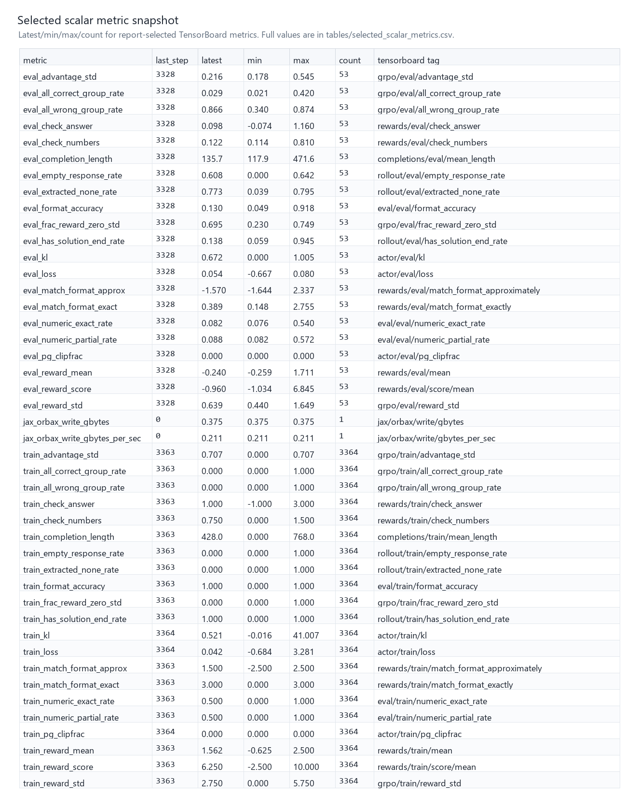

GRPO Baseline `course-baseline-001` 完整结果报告
Technical Summary
本报告包整理的是课程 TPU waxvhe 上完成的 baseline full run。复现流程已经跑完，产出了 base eval、full training、final LoRA eval、checkpoint-wise eval、TensorBoard scalars、rollout traces 和诊断图；但训练结果显示 baseline 在后期发生 collapse。
最关键的结果是：base model 在 held-out greedy eval 上为 51.56%，final LoRA step 3364 只有 3.13%，best observed LoRA checkpoint 是 step 2000 的 28.13%。因此，I.1 可以报告“训练跑通且证据完整”，但不能把 final checkpoint 描述成有效提升。
Key Findings With Visual Evidence

图意：Base model is strongest; final LoRA collapses to 3.13%, while best LoRA is step 2000 at 28.13%.

图意：LoRA accuracy degrades after step 2000; final checkpoint is not the best model.

图意：Small multiples show the late degradation without mixing incompatible scales.

图意：Empty/parse-failure indicators rise late, matching the final accuracy collapse.

图意：Reward diversity, zero-std rate, advantage spread, and group correctness are recorded separately.

图意：Correctness and format-shaping reward components are separated for auditability.

图意：Qualitative traces reveal concrete failure modes behind the aggregate metrics.

图意：Wrong numeric answers dominate, with late response/parse failures explaining collapse.

图意：TensorBoard wall-time gives a reproducible runtime estimate and checkpoint I/O context.

图意：The metric snapshot records latest value and observed range for every report-selected scalar.
Scope, Data, And Metric Definitions
本报告使用本地已 fetch 的目录 artifacts/cloud/course-baseline-001/，不重新连接 TPU，不重跑训练。评估默认采用 greedy preset、64 个 test batches；checkpoint eval 的置信区间来自已有 summary 中的 Wilson 95% CI。
核心指标解释：
accuracy: numeric exact match，是任务成功的主指标。partial_accuracy: numeric partial match，用于观察数字提取是否部分接近。format_accuracy: 输出格式是否满足要求；它是 shaping/format 指标，不等价于数学正确。rewards/*: reward components 和总 reward，用于解释训练信号。actor/*/kl: current policy 与 reference policy 的 KL 约束信号。grpo/*/reward_std与frac_reward_zero_std: group 内 reward 多样性；长期为 0 或过高 zero-std 会削弱 GRPO 学习信号。rollout/*/empty_response_rate与extracted_none_rate: response/parse 健康度，能解释 reward 和 eval accuracy 为什么背离。
Baseline Configuration
| Key | Value |
|---|---|
| `MODEL_ID` | `google/gemma-3-1b-it` |
| `DATA_SOURCE` | `tfds` |
| `MAX_STEPS` | `3364` |
| `NUM_BATCHES` | `3738` |
| `NUM_EPOCHS` | `1` |
| `NUM_GENERATIONS` | `2` |
| `NUM_TEST_BATCHES` | `64` |
| `EVAL_EVERY_N_STEPS` | `64` |
| `SAVE_INTERVAL_STEPS` | `500` |
| `BETA` | `0.08` |
| `EPSILON` | `0.2` |
| `LEARNING_RATE` | `3e-06` |
| `RANK` | `64` |
| `ALPHA` | `64.0` |
| `MAX_PROMPT_LENGTH` | `256` |
| `TOTAL_GENERATION_STEPS` | `768` |
| `TRAIN_MICRO_BATCH_SIZE` | `1` |
| `TRAIN_FRACTION` | `0.9` |
Evaluation Results
| Label | Policy | Step | Accuracy | Partial | Format | Correct |
|---|---|---|---|---|---|---|
| base_direct_eval | base | None | 51.56% | 53.13% | 6.25% | 33/64 |
| final_lora_direct_eval | lora | 3364 | 3.13% | 6.25% | 12.50% | 2/64 |
| base | base | None | 51.56% | 53.13% | 6.25% | 33/64 |
| ckpt-2000 | lora | 2000 | 28.13% | 29.69% | 35.94% | 18/64 |
| ckpt-2500 | lora | 2500 | 20.31% | 23.44% | 31.25% | 13/64 |
| ckpt-3000 | lora | 3000 | 6.25% | 7.81% | 12.50% | 4/64 |
| ckpt-3364 | lora | 3364 | 3.13% | 6.25% | 12.50% | 2/64 |
Collapse Diagnosis
这轮训练的主要问题不是“没有产物”，而是 final checkpoint 不代表最优模型。checkpoint-wise eval 显示 step 2000 后性能持续下降；同时 response health 指标显示 late phase 的 parse failure/empty response 明显恶化，eval reward 也转负。GRPO 的 reward shaping 项和真正任务成功指标发生背离时，模型可能学到局部格式或短输出行为，而不是稳定数学求解。
GRPO-Specific Interpretation
baseline 保持了课程默认设置：NUM_GENERATIONS=2、BETA=0.08、EPSILON=0.2、LEARNING_RATE=3e-6、MAX_STEPS=3364。从成熟 GRPO/RLHF infra 的指标口径看，后续复现实验应同时追踪 reward、KL、clip ratio、completion length、reward_std/zero_std、advantage spread、held-out eval 和 sample tables。单独看 reward 曲线不足以判断训练成功。
Evidence Gallery
代表性样本已经整理在 samples/sample_examples.csv/json，并在 figures/07_trace_examples_table.png 中可视化。样本按 correct、wrong numeric、parse fail、empty response、reward-hacking candidate、late collapse 分类，方便写报告时引用具体输出。
Limitations
- eval 只有 64 个 test batches，适合课程 baseline 复现，但不是完整 benchmark。
- W&B 未启用；本报告以 TensorBoard、JSON eval、rollout trace 和 pipeline log 为事实来源。
- 没有执行 I.3 改进实验，因此 next experiments 只作为设计建议，不作为实验结果。
- rollout trace 是按 observability 采样，不是全量 generation 审计。
Recommended Next Experiments
1. 使用 checkpoint-wise eval 选择 best checkpoint，而不是默认 final checkpoint。
2. 加早停或 model selection：当 held-out numeric accuracy 从 peak 明显下降时停止。
3. 降低学习率或调整 BETA，观察 KL 与 clipfrac 是否更平稳。
4. 将 format shaping 与 numeric correctness 拆开报告，避免格式奖励掩盖任务失败。
5. 增加 response health gate：empty response、Extracted None、completion truncation 超阈值时报警。
6. 继续保留 sample table，因为 qualitative outputs 对 GRPO collapse 诊断非常关键。
External Metric/Infra References
- Tunix metrics: Tunix collected metrics, TensorBoard/W&B backends, and performance tracing.
- HF TRL GRPO logging: GRPO reward, KL, clip ratio, completion length, and entropy logging guidance.
- OpenRLHF logging/eval: RLHF logging backends, periodic evaluation, reward/advantage/generation metrics.
- VeRL-Omni metrics: GRPO reward diversity, zero-std ratio, clipping, and ratio stability framing.
- W&B Tables: Prediction/sample table organization used as a reporting pattern.
- W&B Artifacts: Versioned run inputs/outputs pattern for report package provenance.
- tbparse: TensorBoard event-to-dataframe pattern mirrored with existing scalar exports.